Atelier à Porto Alegre · R. João Guimarães, 31 — Rio Branco
Catalogue
Œuvres à commander
Choisissez une œuvre comme référence et commandez votre tableau peint à la main par Silvia, à la taille de votre choix. Pas de vente en ligne : Silvia répond avec un devis et un délai par WhatsApp ou par e-mail.
Chaque œuvre a un numéro. Pour la commander ou poser une question, indiquez simplement le numéro.
 Roses blanches dans un vase en verreCollection Studioai
Roses blanches dans un vase en verreCollection Studioai Champ de coquelicotsCollection Studioai
Champ de coquelicotsCollection Studioai Pivoine roseCollection Studioai
Pivoine roseCollection Studioai Hortensias bleus dans la crucheCollection Studioai
Hortensias bleus dans la crucheCollection Studioai Tournesols dans une cruche rustiqueCollection Studioai
Tournesols dans une cruche rustiqueCollection Studioai Iris et lysCollection Studioai
Iris et lysCollection Studioai Bougainvillier magenta sur le mur blancCollection Studioai
Bougainvillier magenta sur le mur blancCollection Studioai Lavande et camomilleCollection Studioai
Lavande et camomilleCollection Studioai Tulipes orange dans un pot en terreCollection Studioai
Tulipes orange dans un pot en terreCollection Studioai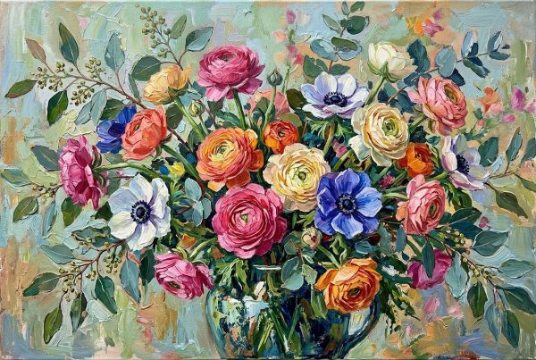
Bouquet de printempsCollection Studioai Cerises et figuesCollection Studioai
Cerises et figuesCollection Studioai Citrons dans l'assiette bleueCollection Studioai
Citrons dans l'assiette bleueCollection Studioai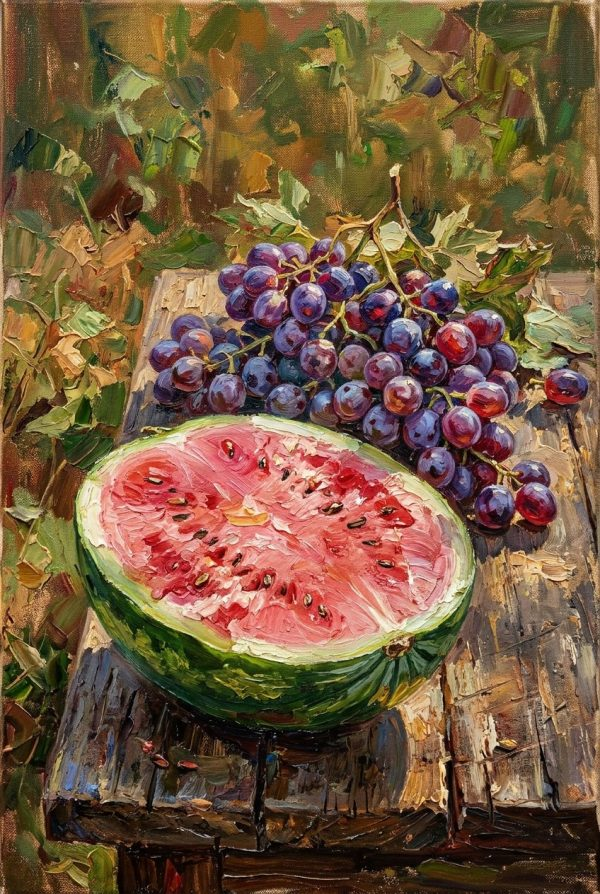
Pastèque et raisinsCollection Studioai Poires et grenadesCollection Studioai
Poires et grenadesCollection Studioai Panier d'orangesCollection Studioai
Panier d'orangesCollection Studioai Café, croissant et fraisesCollection Studioai
Café, croissant et fraisesCollection Studioai Pommes vertes et bouilloire en cuivreCollection Studioai
Pommes vertes et bouilloire en cuivreCollection Studioai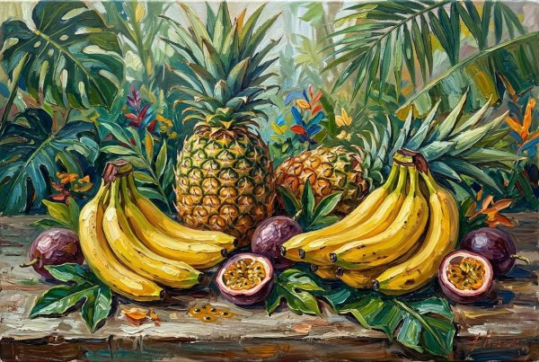
Fruits tropicauxCollection Studioai Citronnade à la mentheCollection Studioai
Citronnade à la mentheCollection Studioai Avocats, citrons et margueritesCollection Studioai
Avocats, citrons et margueritesCollection Studioai Vagues turquoiseCollection Studioai
Vagues turquoiseCollection Studioai Phare sur les rochersCollection Studioai
Phare sur les rochersCollection Studioai Bateaux de pêche à l'aubeCollection Studioai
Bateaux de pêche à l'aubeCollection Studioai Parasols sur la plageCollection Studioai
Parasols sur la plageCollection Studioai Lagon tropicalCollection Studioai
Lagon tropicalCollection Studioai Mouettes au crépusculeCollection Studioai
Mouettes au crépusculeCollection Studioai Passerelle dans les dunesCollection Studioai
Passerelle dans les dunesCollection Studioai Côte rocheuse et mer émeraudeCollection Studioai
Côte rocheuse et mer émeraudeCollection Studioai Voilier sur la mer bleueCollection Studioai
Voilier sur la mer bleueCollection Studioai Marée basse au coucher du soleilCollection Studioai
Marée basse au coucher du soleilCollection Studioai Route entre les collines fleuriesCollection Studioai
Route entre les collines fleuriesCollection Studioai Pins dans la brumeCollection Studioai
Pins dans la brumeCollection Studioai Lac entre montagnes enneigéesCollection Studioai
Lac entre montagnes enneigéesCollection Studioai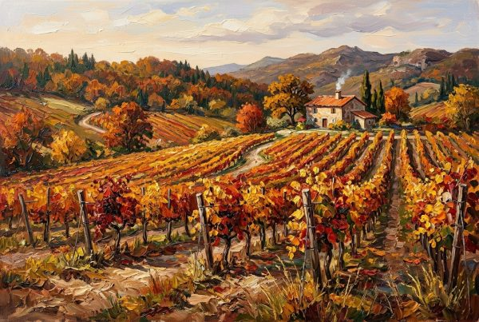
Vignoble en automneCollection Studioai Champ de blé sous l'orageCollection Studioai
Champ de blé sous l'orageCollection Studioai Champ de lavandeCollection Studioai
Champ de lavandeCollection Studioai Bouleaux en automneCollection StudioaiCascade dans la forêtCollection Studioai
Bouleaux en automneCollection StudioaiCascade dans la forêtCollection Studioai Rivière aux saulesCollection Studioai
Rivière aux saulesCollection Studioai Pampa au coucher du soleilCollection Studioai
Pampa au coucher du soleilCollection Studioai Tramway jaune à LisbonneCollection Studioai
Tramway jaune à LisbonneCollection Studioai Toits de Paris à la tombée de la nuitCollection Studioai
Toits de Paris à la tombée de la nuitCollection Studioai Canal de Venise et gondolesCollection Studioai
Canal de Venise et gondolesCollection Studioai Maisons colonialesCollection Studioai
Maisons colonialesCollection Studioai Marché aux fleurs sous la pluieCollection Studioai
Marché aux fleurs sous la pluieCollection Studioai Village grecCollection Studioai
Village grecCollection Studioai Trompette en touches libresCollection StudioaiN° 163 · Gauchos à cheval
Trompette en touches libresCollection StudioaiN° 163 · Gauchos à cheval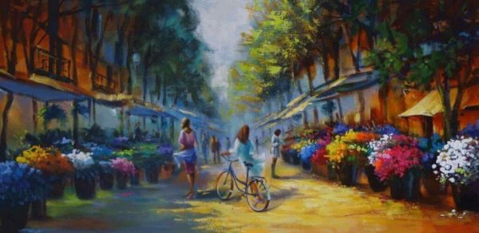
N° 162 · Avenue fleurie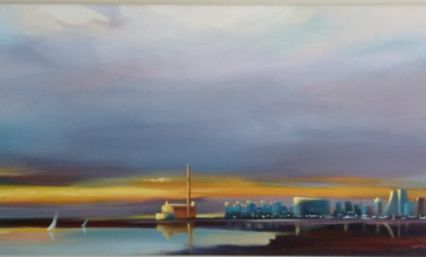
N° 161 · Crépuscule sur le lac N° 159 · Femme et chien au bord de la merN° 157 · Narcisses
N° 159 · Femme et chien au bord de la merN° 157 · Narcisses N° 156 · Triptyque : coucher de soleil sur la plage
N° 156 · Triptyque : coucher de soleil sur la plage N° 155 · Bouquet de margueritesN° 154 · Vélo fleuri
N° 155 · Bouquet de margueritesN° 154 · Vélo fleuri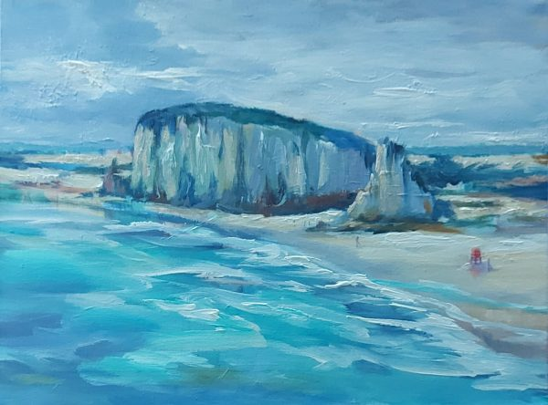
N° 153 · Mer et falaise N° 152 · Nature morte en bleu
N° 152 · Nature morte en bleu N° 150 · Bouquet lilas et bleu
N° 150 · Bouquet lilas et bleu N° 148 · Cavalier au lasso
N° 148 · Cavalier au lasso N° 147 · Cascade de fleurs jaunes
N° 147 · Cascade de fleurs jaunes N° 145 · Crépuscule sur le Guaíba
N° 145 · Crépuscule sur le Guaíba N° 141 · Ail et citronN° 140 · Vieille rue à la tombée de la nuit
N° 141 · Ail et citronN° 140 · Vieille rue à la tombée de la nuit N° 139 · Fleurs dans l'atelier
N° 139 · Fleurs dans l'atelier N° 136 · Fleurs blanches dans la nuit
N° 136 · Fleurs blanches dans la nuit N° 135 · Gaucho à cheval
N° 135 · Gaucho à cheval N° 133 · Grande demeure au graphite
N° 133 · Grande demeure au graphite N° 131 · Tulipes
N° 131 · Tulipes N° 130 · Plage aux cocotiers
N° 130 · Plage aux cocotiers N° 128 · Fleurs en relief dans le vase
N° 128 · Fleurs en relief dans le vase N° 126 · Maison verte avec jardin
N° 126 · Maison verte avec jardin N° 123 · Fleurs bleues et dorées
N° 123 · Fleurs bleues et dorées N° 122 · Fleurs dans un vase en verre
N° 122 · Fleurs dans un vase en verre N° 121 · Bananes et fleurs roses
N° 121 · Bananes et fleurs roses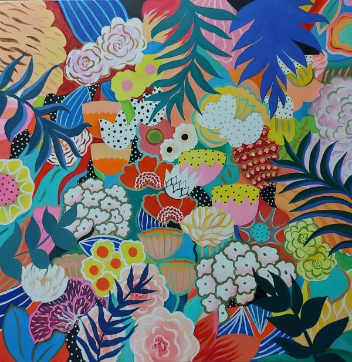
N° 120 · Jardin tropical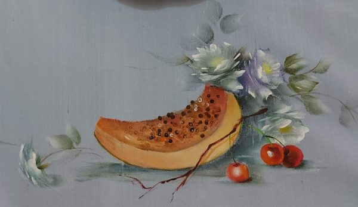
N° 119 · Papaye et fleurs N° 118 · Grenade et fleurs blanches
N° 118 · Grenade et fleurs blanches N° 117 · Figues et fleurs
N° 117 · Figues et fleurs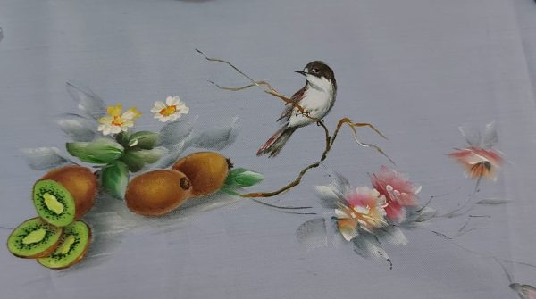
N° 116 · Kiwi et petit oiseau N° 115 · Pomme de cajou et fleurs
N° 115 · Pomme de cajou et fleurs N° 114 · Prunes et feuilles
N° 114 · Prunes et feuilles N° 112 · Pomme verte et fleurs
N° 112 · Pomme verte et fleurs N° 111 · Abstrait noir et or
N° 111 · Abstrait noir et or N° 110 · Raisins et margueritesN° 109 · Pêcheur sur la plage
N° 110 · Raisins et margueritesN° 109 · Pêcheur sur la plage N° 108 · Noix de coco et fleurs
N° 108 · Noix de coco et fleurs N° 107 · Marché dans une vieille rue
N° 107 · Marché dans une vieille rue N° 106 · Rue fleurie aux auvents
N° 106 · Rue fleurie aux auvents N° 104 · Buffle et lion
N° 104 · Buffle et lion N° 101 · Fleurs à l'aquarelle
N° 101 · Fleurs à l'aquarelle N° 100 · Explosion de fleurs
N° 100 · Explosion de fleurs N° 97 · Porte bleue et plante grimpante
N° 97 · Porte bleue et plante grimpante N° 96 · Fleurs dans le vent
N° 96 · Fleurs dans le vent N° 95 · Brin de fleurs léger
N° 95 · Brin de fleurs léger N° 94 · Pivoines blanches
N° 94 · Pivoines blanches N° 92 · Fleurs lilas en relief
N° 92 · Fleurs lilas en relief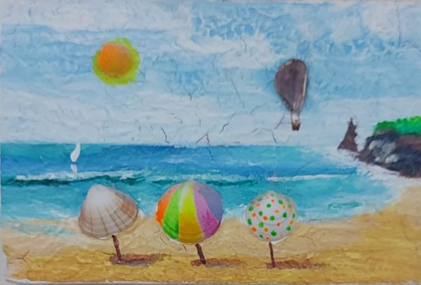
N° 91 · Plage avec ballon N° 90 · Pêcheurs dans la barque
N° 90 · Pêcheurs dans la barque N° 89 · Lac bleu à l'aube
N° 89 · Lac bleu à l'aube N° 87 · Vase bleu fleuri
N° 87 · Vase bleu fleuri N° 86 · Fantaisie de couleurs
N° 86 · Fantaisie de couleurs N° 85 · Voiliers dans la baie
N° 85 · Voiliers dans la baie N° 82 · Orchidées
N° 82 · Orchidées N° 80 · Fleurs en transparenceN° 79 · Gauchos à cheval au coucher du soleil
N° 80 · Fleurs en transparenceN° 79 · Gauchos à cheval au coucher du soleil N° 77 · Père et fils dans la rue la nuit
N° 77 · Père et fils dans la rue la nuit N° 72 · Immeuble de verre et jardin
N° 72 · Immeuble de verre et jardin N° 70 · Héron au crépusculeN° 69 · Nuit dans la cour colonialeN° 67 · Portrait de carlin
N° 70 · Héron au crépusculeN° 69 · Nuit dans la cour colonialeN° 67 · Portrait de carlin N° 66 · Vase de fleurs en bleu
N° 66 · Vase de fleurs en bleu N° 65 · Voilier au coucher du soleil
N° 65 · Voilier au coucher du soleil N° 64 · Maison en bois en automne
N° 64 · Maison en bois en automne N° 56 · Moulin dans la campagne
N° 56 · Moulin dans la campagne N° 55 · Promenade sous la pluie au crépuscule
N° 55 · Promenade sous la pluie au crépuscule N° 54 · Portrait de chiot
N° 54 · Portrait de chiot N° 52 · Abstrait rouge et or
N° 52 · Abstrait rouge et or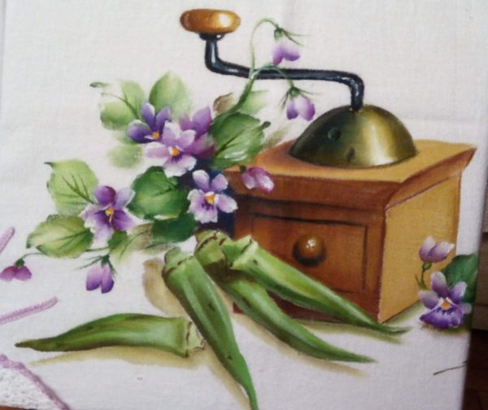
N° 51 · Moulin à café et violettes N° 50 · Nuit de pluie à Paris
N° 50 · Nuit de pluie à Paris N° 49 · Chapelle dans la campagne
N° 49 · Chapelle dans la campagne N° 48 · Chatte à la couronne de fleursN° 47 · Abstrait bleu et ambre
N° 48 · Chatte à la couronne de fleursN° 47 · Abstrait bleu et ambre N° 46 · Bananes et fleurs lilas
N° 46 · Bananes et fleurs lilas N° 45 · Coucher de soleil sur la ville
N° 45 · Coucher de soleil sur la ville N° 44 · Bouquet coloré en relief
N° 44 · Bouquet coloré en relief N° 32 · Abstrait en rouge
N° 32 · Abstrait en rouge N° 31 · Abstrait lilas et or
N° 31 · Abstrait lilas et or N° 27 · Oiseau sur fond doré
N° 27 · Oiseau sur fond doré N° 26 · Chien au poil noirN° 22 · Skieurs dans la neige
N° 26 · Chien au poil noirN° 22 · Skieurs dans la neige N° 21 · Pleine lune sur les rochers
N° 21 · Pleine lune sur les rochers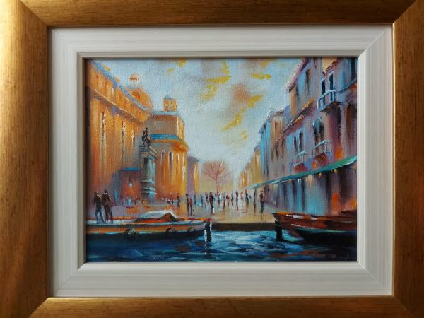
N° 20 · Canal de Venise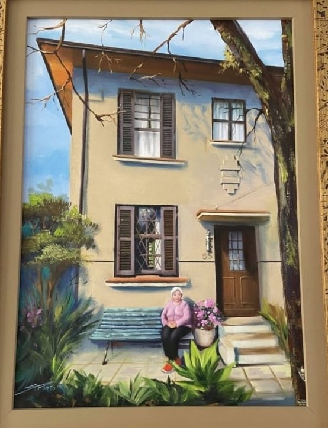
N° 19 · Maison jaune avec jardin N° 18 · Fleurs de printemps, détail
N° 18 · Fleurs de printemps, détail N° 17 · Vase vert aux fleurs bleues
N° 17 · Vase vert aux fleurs bleues N° 16 · Vase aux fleurs tropicales
N° 16 · Vase aux fleurs tropicales N° 15 · Fleurs de printemps à la feuille d'orN° 14 · Parapluie jauneN° 13 · Tramway et vélo sous la pluieN° 12 · Femme en rouge dans la vieille rue
N° 15 · Fleurs de printemps à la feuille d'orN° 14 · Parapluie jauneN° 13 · Tramway et vélo sous la pluieN° 12 · Femme en rouge dans la vieille rue N° 11 · Marché aux fleurs
N° 11 · Marché aux fleurs N° 4 · Chien aux yeux bleus
N° 4 · Chien aux yeux bleus N° 3 · Cheval avec rênes
N° 3 · Cheval avec rênes N° 2 · Fleurs orange au bord de la mer
N° 2 · Fleurs orange au bord de la mer N° 1 · Femme au parapluie chez le fleuriste
N° 1 · Femme au parapluie chez le fleuriste Cycliste dans la rue fleurie
Cycliste dans la rue fleurieVous ne trouvez pas votre bonheur ? Silvia peint à partir de votre photo ou de votre idée.
Commander par WhatsApp Écrire un e-mail à Silvia© 2026 Silvia Porto — Arts plastiques · Porto Alegre, RSCommandes · WhatsApp (51) 99283-8195 · silviabeust1@gmail.comDéveloppé par Diego Kasper - +Tableaux